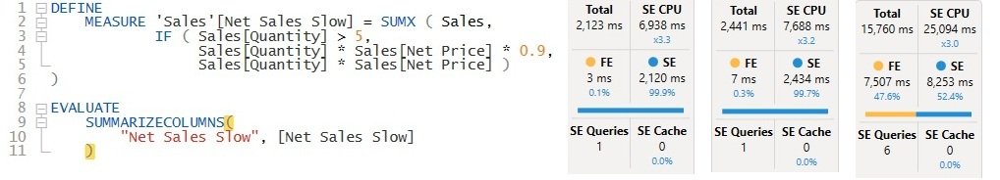
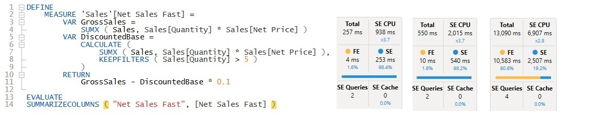
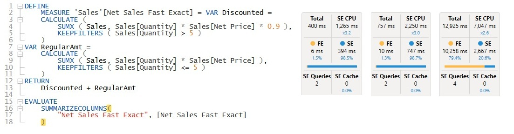
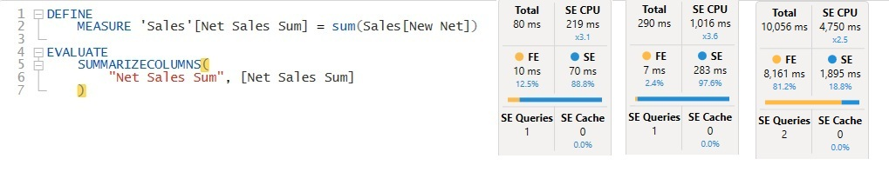

Contoso 100M · Page 3 of 3
Query design: grand total vs. a real visual
The same measure can look fast or slow depending on the query used to test it. Each screenshot shows the measure-only query on the left, followed by three Server Timings panels.
Measure only
SUMMARIZECOLUMNS with just the measure: one number for the whole table.
Year × Category
The measure grouped by 'Date'[Year] and 'Product'[Category]: a small table.
Real matrix
The query copied from Performance Analyzer: 4 years in columns, Product Category and Customer Name in rows.
| Measure | Measure only | Year × Category | Customer matrix | Matrix FE share |
|---|---|---|---|---|
| Net Sales Slow | 2,123 ms | 2,441 ms | 15,760 ms | 47.6% |
| Net Sales Fast | 257 ms | 550 ms | 13,090 ms | 80.8% |
| Net Sales Fast Exact | 400 ms | 757 ms | 12,925 ms | 79.4% |
| Net Sales Sum (calculated column) | 80 ms | 290 ms | 10,056 ms | 81.2% |
Net Sales Slow original

The grand total alone already takes 2,123 ms, and grouping by Year × Category adds only about 15%. The cost comes from evaluating every sales row, not from the number of cells in the result. On the customer matrix, the query grows to 15,760 ms with 6 storage engine queries, split almost evenly between the formula engine (7.5 s) and the storage engine (8.3 s).
Net Sales Fast rewrite

The total takes 257 ms, about 8x faster than the original. Grouping doubles it to 550 ms, because the storage engine now has to join to the Date and Product tables and group the results. On the customer matrix it reaches 13,090 ms, and 81% of that is formula engine time. The bottleneck has moved from the measure to the size of the visual.
Net Sales Fast Exact rewrite, per-row discount

This version is somewhat slower than Fast on small queries (400 ms and 757 ms), because multiplying by 0.9 on every row adds storage engine CPU (1,265 ms vs. 938 ms for the total). It's still about 5x faster than the original. On the customer matrix, it's practically the same as Fast at 12,925 ms, again about 80% formula engine.
Net Sales Sum calculated column + SUM

Here the discount logic from the original measure moves into a calculated column (Sales[New Net]), computed once per row at refresh. The measure is just a SUM. The total takes 80 ms with a single storage engine query, about 26x faster than the original and 3x faster than Fast. Year × Category takes 290 ms, still one storage engine query. On the customer matrix, it's the fastest version at 10,056 ms, with only 2 storage engine queries and 1,895 ms of storage engine time. The formula engine still accounts for 81% (8.2 s), because the size of the visual hasn't changed.
The speed isn't free: the work moves from query time to refresh time, and a new decimal column on 225M+ rows adds memory to the model. The discount rule is also fixed at refresh, so users can't change it with a slicer.
Show column and measure
// Calculated column on Sales: the original row logic, computed at refresh
New Net =
IF ( Sales[Quantity] > 5,
Sales[Quantity] * Sales[Net Price] * 0.9,
Sales[Quantity] * Sales[Net Price] )
// Measure
Net Sales Sum = SUM ( Sales[New Net] )
Summary
- A grand-total query flatters the optimized measures. On the total, the DAX rewrites are 5 to 8x faster than the original and the calculated column is 26x faster. On the real customer matrix, the advantage drops to 1.2x for the rewrites and 1.6x for the calculated column (15.8 s vs. 12.9 to 13.1 s vs. 10.1 s).
- On a large visual, the bottleneck moves. For every optimized version, about 80% of the matrix time is formula engine work: sorting, subtotals and assembling hundreds of thousands of customer × year cells. Even a plain
SUMspends 8.2 s there, so that cost doesn't depend on how the measure is written. - Pre-calculating the value wins at every level. The calculated column needs the fewest storage engine queries (1, and 2 on the matrix) and the least storage engine CPU. The cost moves to refresh time and model memory, and the rule is fixed at refresh. In production, the same column is better created upstream (Power Query, Snowflake or Fabric), where it can also apply the rounding rule finance agrees on.
- Benchmark with the query the visual actually sends. Copying the query from Performance Analyzer into DAX Studio shows what users will really wait for. The simple queries explain why it's fast or slow.
- The last fix isn't in the DAX. A matrix listing 1.8M customers is slow by design: even the best version takes 10 seconds. Show categories or a Top N list, and put customer detail on a drill-through page.